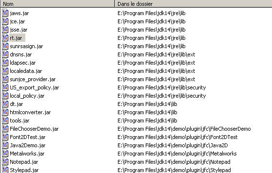
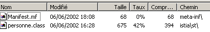

3. الفئات والواجهات
3.1. الموضوع مع أمثلة توضيحية
3.1.1. نظرة عامة
سنستكشف الآن البرمجة الموجهة للكائنات من خلال أمثلة. الكائن هو كيان يحتوي على بيانات تحدد حالته (تسمى السمات أو الخصائص) ووظائفه (تسمى الطرق). يتم إنشاء الكائن بناءً على قالب يسمى الفئة:
public class C1{
type1 p1; // property p1
type2 p2; // property p2
…
type3 m3(…){ // m3 method
…
}
type4 m4(…){ // m4 method
…
}
…
}
من الفئة السابقة C1، يمكننا إنشاء العديد من الكائنات O1، O2، … وستكون لجميعها الخصائص p1، p2، … والطرق m3، m4، … وستكون لها قيم مختلفة لخصائصها pi، وبالتالي سيكون لكل منها حالتها الخاصة.
إذا كان O1 كائنًا من النوع C1، فإن O1.p1 تشير إلى الخاصية p1 لـ O1، و O1.m1 تشير إلى الطريقة m1 لـ O1.
لننظر إلى نموذج الكائن الأول: فئة Person.
3.1.2. تعريف فئة Person
تعريف فئة Person هو كما يلي:
import java.io.*;
public class personne{
// attributes
private String prenom;
private String nom;
private int age;
// method
public void initialise(String P, String N, int age){
this.prenom=P;
this.nom=N;
this.age=age;
}
// method
public void identifie(){
System.out.println(prenom+","+nom+","+age);
}
}
هنا لدينا تعريف لفئة، وهي نوع من أنواع البيانات. عندما ننشئ متغيرات من هذا النوع، نسميها كائنات. وبالتالي، فإن الفئة هي قالب يتم بناء الكائنات منه.
يمكن أن تكون عناصر أو حقول الفئة بيانات أو طرق (دوال). ويمكن أن تحتوي هذه الحقول على إحدى السمات الثلاث التالية:
private: لا يمكن الوصول إلى الحقل الخاص إلا من خلال الطرق الداخلية للفئة
عام: يمكن الوصول إلى الحقل العام من خلال أي دالة، سواء تم تعريفه داخل الفئة أم لا
محمي: لا يمكن الوصول إلى الحقل المحمي إلا من خلال الطرق الداخلية للفئة أو من خلال كائن مشتق (انظر مفهوم الوراثة لاحقًا).
بشكل عام، تُعلن بيانات الفئة على أنها خاصة، بينما تُعلن أساليبها على أنها عامة. وهذا يعني أن مستخدم الكائن (المبرمج)
أ: لن يكون لديه وصول مباشر إلى البيانات الخاصة للكائن
ب: سيكون قادرًا على استدعاء الطرق العامة للكائن، بما في ذلك تلك التي توفر الوصول إلى بياناته الخاصة.
صيغة إعلان الكائن هي كما يلي:
public class nomClasse{
private donnée ou méthode privée
public donnée ou méthode publique
protected donnée ou méthode protégée
}
ملاحظات
- ترتيب إعلان السمات الخاصة والمحمية والعامة هو ترتيب تعسفي.
3.1.3. طريقة initialize
لنعد إلى فئة Person التي تم تعريفها على النحو التالي:
import java.io.*;
public class personne{
// attributes
private String prenom;
private String nom;
private int age;
// method
public void initialise(String P, String N, int age){
this.prenom=P;
this.nom=N;
this.age=age;
}
// method
public void identifie(){
System.out.println(prenom+","+nom+","+age);
}
}
ما هو دور طريقة initialize؟ نظرًا لأن lastName و firstName و age هي عناصر خاصة في فئة Person، فإن العبارات
غير صالحة. يجب علينا تهيئة كائن من نوع Person باستخدام طريقة عامة. وهذا هو دور طريقة initialize. نكتب:
صيغة p1.initialize صحيحة لأن initialize عامة.
3.1.4. المشغل new
تسلسل التعليمات
غير صحيح. العبارة
يعلن p1 كمرجع إلى كائن من نوع person. هذا الكائن غير موجود بعد، لذا لم يتم تهيئة p1. وكأننا كتبنا:
حيث نشير صراحةً باستخدام الكلمة الرئيسية null إلى أن المتغير p1 لا يشير بعد إلى أي كائن.
وعندما نكتب بعد ذلك
فإننا نستدعي طريقة initialize للكائن المشار إليه بواسطة p1. ومع ذلك، فإن هذا الكائن غير موجود بعد، وسيقوم المُترجم بالإبلاغ عن خطأ. لكي يشير p1 إلى كائن، يجب أن نكتب:
يؤدي هذا إلى إنشاء كائن Person غير مُهيأ: ستكون قيمة السمتين name و first_name، اللتين تشيران إلى كائنات String، هي null، وستكون قيمة age هي 0. وبالتالي، هناك تهيئة افتراضية. والآن بعد أن أصبح p1 يشير إلى كائن، فإن عبارة التهيئة لهذا الكائن
صالحًا.
3.1.5. الكلمة الرئيسية this
دعونا نلقي نظرة على كود طريقة initialize:
public void initialise(String P, String N, int age){
this.prenom=P;
this.nom=N;
this.age=age;
}
تعني العبارة this.firstName = P أن السمة firstName للكائن الحالي (this) تُعطى القيمة P. تشير الكلمة الرئيسية this إلى الكائن الحالي: الكائن الذي توجد فيه الطريقة التي يتم تنفيذها. كيف نعرف ذلك؟ لنلقِ نظرة على كيفية تهيئة الكائن المشار إليه بواسطة p1 في البرنامج المستدعي:
يتم استدعاء طريقة initialize الخاصة بالكائن p1. عندما نشير إلى الكائن this داخل هذه الطريقة، فإننا نشير في الواقع إلى الكائن p1. كان من الممكن أيضًا كتابة طريقة initialize على النحو التالي:
public void initialise(String P, String N, int age){
prenom=P;
nom=N;
this.age=age;
}
عندما تشير إحدى طرق الكائن إلى سمة A لهذا الكائن، فإن الترميز this.A يكون ضمنيًا. ويجب استخدامه صراحةً عند وجود تعارض في المعرفات. وهذا هو الحال في العبارة:
this.age=age;
حيث تشير age إلى كل من سمة الكائن الحالي والمعلمة age التي تستقبلها الطريقة. يجب عندئذٍ حل الغموض بالإشارة إلى السمة age على أنها this.age.
3.1.6. برنامج اختبار
فيما يلي برنامج اختبار:
public class test1{
public static void main(String arg[]){
personne p1=new personne();
p1.initialise("Jean","Dupont",30);
p1.identifie();
}
}
يتم تعريف فئة Person في ملف المصدر person.java ويتم ترجمتها:
E:\data\serge\JAVA\BASES\OBJETS\2>javac personne.java
E:\data\serge\JAVA\BASES\OBJETS\2>dir
10/06/2002 09:21 473 personne.java
10/06/2002 09:22 835 personne.class
10/06/2002 09:23 165 test1.java
نقوم بنفس الشيء بالنسبة لبرنامج الاختبار:
E:\data\serge\JAVA\BASES\OBJETS\2>javac test1.java
E:\data\serge\JAVA\BASES\OBJETS\2>dir
10/06/2002 09:21 473 personne.java
10/06/2002 09:22 835 personne.class
10/06/2002 09:23 165 test1.java
10/06/2002 09:25 418 test1.class
قد يبدو من المفاجئ أن برنامج test1.java لا يستورد فئة person باستخدام عبارة:
عندما يصادف المُجمِّع إشارة إلى فئة في شفرة المصدر غير مُعرَّفة في نفس ملف المصدر، فإنه يبحث عن الفئة في مواقع مختلفة:
- في الحزم التي تم استيرادها بواسطة عبارات الاستيراد
- في الدليل الذي تم تشغيل المُترجم منه
في مثالنا، تم تشغيل المُترجم من الدليل الذي يحتوي على ملف personne.class، وهو ما يفسر سبب عثوره على تعريف فئة personne. في هذا السيناريو، تؤدي إضافة عبارة استيراد إلى حدوث خطأ في الترجمة:
E:\data\serge\JAVA\BASES\OBJETS\2>javac test1.java
test1.java:1: '.' expected
import personne;
^
1 error
لتجنب هذا الخطأ مع ضمان استيراد فئة Person، سنكتب ما يلي في بداية البرنامج في المستقبل:
يمكننا الآن تشغيل ملف test1.class:
من الممكن دمج عدة فئات في ملف مصدر واحد. دعونا ندمج الفئتين <bdi dir="ltr" class="odt-ltr-term">person</bdi>* و<bdi dir="ltr" class="odt-ltr-term">test1</bdi> في ملف المصدر <bdi dir="ltr" class="odt-ltr-term">test2.java</bdi>*. يتم تغيير اسم الفئة <bdi dir="ltr" class="odt-ltr-term">test1</bdi> إلى <bdi dir="ltr" class="odt-ltr-term">test2</bdi> لتعكس التغيير في اسم ملف المصدر:
// imported packages
import java.io.*;
class personne{
// attributes
private String prenom; // first name
private String nom; // its name
private int age; // his age
// method
public void initialise(String P, String N, int age){
this.prenom=P;
this.nom=N;
this.age=age;
}//initialize
// method
public void identifie(){
System.out.println(prenom+","+nom+","+age);
}//identifies
}//class
public class test2{
public static void main(String arg[]){
personne p1=new personne();
p1.initialise("Jean","Dupont",30);
p1.identifie();
}
}
لاحظ أن فئة Person لم تعد تحتوي على السمة public. في الواقع، في ملف مصدر Java، لا يمكن أن تحتوي سوى فئة واحدة على السمة public. وهي الفئة التي تحتوي على الدالة main. علاوة على ذلك، يجب أن يُسمى ملف المصدر باسم هذه الفئة. دعونا نقوم بترجمة ملف test2.java:
E:\data\serge\JAVA\BASES\OBJETS\3>dir
10/06/2002 09:36 633 test2.java
E:\data\serge\JAVA\BASES\OBJETS\3>javac test2.java
E:\data\serge\JAVA\BASES\OBJETS\3>dir
10/06/2002 09:36 633 test2.java
10/06/2002 09:41 832 personne.class
10/06/2002 09:41 418 test2.class
لاحظ أنه تم إنشاء ملف .class لكل فئة موجودة في ملف المصدر. الآن دعونا نقوم بتشغيل ملف test2.class:
من الآن فصاعدًا، سنستخدم كلا الأسلوبين بالتبادل:
- تجميع الفئات في ملف مصدر واحد
- فئة واحدة لكل ملف مصدر
3.1.7. طريقة أخرى تقوم بالتهيئة
لنواصل مع فئة Person ونضيف إليها الطريقة التالية:
public void initialise(personne P){
prenom=P.prenom;
nom=P.nom;
this.age=P.age;
}
لدينا الآن طريقتان باسم *<bdi dir="ltr" class="odt-ltr-term">initialize</bdi>*: وهذا مسموح به طالما أنهما تأخذان معلمات مختلفة. وهذا هو الحال هنا. أصبحت المعلمة الآن مرجعًا P إلى شخص. ثم يتم تعيين سمات الشخص P إلى الكائن الحالي (this). لاحظ أن طريقة initialize لها وصول مباشر إلى سمات الكائن P على الرغم من أنها من النوع الخاص. وهذا صحيح دائمًا: طرق كائن O1 من فئة C لها دائمًا وصول إلى السمات الخاصة لكائنات أخرى من نفس الفئة C.
فيما يلي اختبار لفئة Person الجديدة:
// import nobody;
import java.io.*;
public class test1{
public static void main(String arg[]){
personne p1=new personne();
p1.initialise("Jean","Dupont",30);
System.out.print("p1=");
p1.identifie();
personne p2=new personne();
p2.initialise(p1);
System.out.print("p2=");
p2.identifie();
}
}
ونتيجتها:
3.1.8. منشئو فئة Person
المنشئ هو طريقة تحمل اسم الفئة ويتم استدعاؤها عند إنشاء الكائن. وتستخدم عادةً لتهيئة الكائن. وهي طريقة يمكنها قبول معلمات ولكنها لا تُرجع أي نتيجة. ولا يسبق نموذجها الأولي أو تعريفها أي نوع (ولا حتى void).
إذا كانت الفئة تحتوي على منشئ يقبل n من الحجج args، فيمكن إجراء إعلان وتهيئة كائن من تلك الفئة على النحو التالي:
classe objet =new classe(arg1,arg2, ... argn);
أو
classe objet;
…
objet=new classe(arg1,arg2, ... argn);
عندما تحتوي فئة على منشئ واحد أو أكثر، يجب استخدام أحد هذه المنشئات لإنشاء كائن من تلك الفئة. إذا كانت الفئة C لا تحتوي على منشئات، فإنها تحتوي على منشئ افتراضي، وهو المنشئ بدون معلمات: public C(). ثم يتم تهيئة سمات الكائن بالقيم الافتراضية. هذا ما حدث عندما كتبنا في البرامج السابقة:
لنقم بإنشاء منشئين لفئة Person الخاصة بنا:
public class personne{
// attributes
private String prenom;
private String nom;
private int age;
// manufacturers
public personne(String P, String N, int age){
initialise(P,N,age);
}
public personne(personne P){
initialise(P);
}
// method
public void initialise(String P, String N, int age){
this.prenom=P;
this.nom=N;
this.age=age;
}
public void initialise(personne P){
this.prenom=P.prenom;
this.nom=P.nom;
this.age=P.age;
}
// method
public void identifie(){
System.out.println(prenom+","+nom+","+age);
}
}
تقوم المنشئتان لدينا ببساطة باستدعاء طرق التهيئة المقابلة. تذكر أنه عندما نجد، في المنشئ، الترميز initialize(P)، على سبيل المثال، يقوم المُترجم بترجمته إلى this.initialize(P). في المنشئ، يتم استدعاء طريقة التهيئة (initialize) للتعامل مع الكائن المشار إليه بواسطة this، أي الكائن الحالي، الذي يتم إنشاؤه.
إليك برنامج اختبار:
// import nobody;
import java.io.*;
public class test1{
public static void main(String arg[]){
personne p1=new personne("Jean","Dupont",30);
System.out.print("p1=");
p1.identifie();
personne p2=new personne(p1);
System.out.print("p2=");
p2.identifie();
}
}
والنتائج التي تم الحصول عليها:
3.1.9. مراجع الكائنات
ما زلنا نستخدم نفس فئة Person. يصبح برنامج الاختبار كما يلي:
// import nobody;
import java.io.*;
public class test1{
public static void main(String arg[]){
// p1
personne p1=new personne("Jean","Dupont",30);
System.out.print("p1="); p1.identifie();
// p2 references the same object as p1
personne p2=p1;
System.out.print("p2="); p2.identifie();
// p3 references an object that will be a copy of the object referenced by p1
personne p3=new personne(p1);
System.out.print("p3="); p3.identifie();
// change the state of the object referenced by p1
p1.initialise("Micheline","Benoît",67);
System.out.print("p1="); p1.identifie();
// as p2=p1, the object referenced by p2 must have changed state
System.out.print("p2="); p2.identifie();
// as p3 does not reference the same object as p1, the object referenced by p3 must not have changed
System.out.print("p3="); p3.identifie();
}
}
النتائج هي كما يلي:
p1=Jean,Dupont,30
p2=Jean,Dupont,30
p3=Jean,Dupont,30
p1=Micheline,Benoît,67
p2=Micheline,Benoît,67
p3=Jean,Dupont,30
عند تعريف المتغير p1 باستخدام
تشير p1 إلى الكائن person("Jean","Dupont",30) ولكنها ليست الكائن نفسه. في لغة C، يمكننا القول إنها مؤشر، أي عنوان الكائن الذي تم إنشاؤه. إذا كتبنا بعد ذلك:
فليس الكائن person("Jean","Dupont",30) هو الذي يتم تعديله؛ بل إن المرجع p1 هو الذي يغير قيمته. وسيتم "فقدان" الكائن person("Jean","Dupont",30) إذا لم تتم الإشارة إليه بواسطة أي متغير آخر.
عندما نكتب:
نقوم بتهيئة المؤشر p2: فهو "يشير" إلى نفس الكائن (يشير إلى نفس الكائن) الذي يشير إليه المؤشر p1. وبالتالي، إذا قمنا بتعديل الكائن الذي "يشير إليه" (أو المشار إليه) p1، فإننا نقوم بتعديل الكائن المشار إليه بواسطة p2.
عندما نكتب:
يتم إنشاء كائن جديد، وهو نسخة من الكائن المشار إليه بواسطة p1. سيتم الإشارة إلى هذا الكائن الجديد بواسطة p3. إذا قمت بتعديل الكائن "المشار إليه" (أو المشار إليه) بواسطة p1، فإنك لا تقوم بتعديل الكائن المشار إليه بواسطة p3 بأي شكل من الأشكال. هذا ما تظهره النتائج.
3.1.10. الكائنات المؤقتة
في تعبير ما، يمكنك استدعاء منشئ الكائن بشكل صريح: يتم إنشاء الكائن، لكن لا يمكنك الوصول إليه (لتعديله، على سبيل المثال). يتم إنشاء هذا الكائن المؤقت لغرض تقييم التعبير ثم يتم التخلص منه. سيتم استرداد مساحة الذاكرة التي شغلها تلقائيًا لاحقًا بواسطة برنامج يسمى "جامع القمامة"، والذي يتمثل دوره في استرداد مساحة الذاكرة التي تشغلها الكائنات التي لم تعد مرجعية لبيانات البرنامج.
انظر المثال التالي:
// import nobody;
public class test1{
public static void main(String arg[]){
new personne(new personne("Jean","Dupont",30)).identifie();
}
}
ولنقوم بتعديل منشئات فئة Person بحيث تعرض رسالة:
// manufacturers
public personne(String P, String N, int age){
System.out.println("Constructeur personne(String, String, int)");
initialise(P,N,age);
}
public personne(personne P){
System.out.println("Constructeur personne(personne)");
initialise(P);
}
نحصل على النتائج التالية:
يُظهر البناء المتتالي للكائنين المؤقتين.
3.1.11. طرق قراءة وكتابة السمات الخاصة
نضيف الطرق اللازمة إلى فئة Person لقراءة أو تعديل حالة سمات الكائنات:
public class personne{
private String prenom;
private String nom;
private int age;
public personne(String P, String N, int age){
this.prenom=P;
this.nom=N;
this.age=age;
}
public personne(personne P){
this.prenom=P.prenom;
this.nom=P.nom;
this.age=P.age;
}
public void identifie(){
System.out.println(prenom+","+nom+","+age);
}
// accessors
public String getPrenom(){
return prenom;
}
public String getNom(){
return nom;
}
public int getAge(){
return age;
}
//modifiers
public void setPrenom(String P){
this.prenom=P;
}
public void setNom(String N){
this.nom=N;
}
public void setAge(int age){
this.age=age;
}
}
نختبر الفئة الجديدة باستخدام البرنامج التالي:
// import nobody;
public class test1{
public static void main(String[] arg){
personne P=new personne("Jean","Michelin",34);
System.out.println("P=("+P.getPrenom()+","+P.getNom()+","+P.getAge()+")");
P.setAge(56);
System.out.println("P=("+P.getPrenom()+","+P.getNom()+","+P.getAge()+")");
}
}
ونحصل على النتائج التالية:
3.1.12. طرق وسمات الفئة
لنفترض أننا نريد حساب عدد كائنات Person التي تم إنشاؤها في أحد التطبيقات. يمكننا إدارة عداد بأنفسنا، لكننا نخاطر بنسيان الكائنات المؤقتة التي يتم إنشاؤها هنا وهناك. يبدو أنه من الأكثر أمانًا تضمين تعليمات في منشئات فئة Person تعمل على زيادة العداد. تكمن المشكلة في تمرير مرجع إلى هذا العداد حتى تتمكن المنشئة من زيادته: نحتاج إلى تمرير معلمة جديدة إليها. يمكننا أيضًا تضمين العداد في تعريف الفئة. نظرًا لأنه سمة للفئة نفسها وليس لكائن معين من تلك الفئة، فإننا نعلنه بشكل مختلف باستخدام الكلمة الرئيسية static:
للإشارة إليها، نكتب person.nbPeople لإظهار أنها سمة تابعة لفئة Person نفسها. هنا، أنشأنا سمة خاصة لا يمكن الوصول إليها مباشرة من خارج الفئة. لذلك، نقوم بإنشاء طريقة عامة لتوفير الوصول إلى سمة الفئة nbPersonnes. لإرجاع قيمة nbPersonnes، لا تحتاج الطريقة إلى كائن محدد: في الواقع، nbPersonnes ليست سمة لكائن محدد؛ إنها سمة للفئة بأكملها. لذلك، نحتاج إلى طريقة فئة يتم إعلانها أيضًا على أنها ثابتة:
والتي سيتم استدعاؤها من الخارج باستخدام الصيغة person.getNbPeople(). إليك مثال على ذلك.
تصبح فئة Person كما يلي:
public class personne{
// class attribute
private static long nbPersonnes=0;
// object attributes
…
// manufacturers
public personne(String P, String N, int age){
initialise(P,N,age);
nbPersonnes++;
}
public personne(personne P){
initialise(P);
nbPersonnes++;
}
// method
…
// class method
public static long getNbPersonnes(){
return nbPersonnes;
}
}// class
مع البرنامج التالي:
// import nobody;
public class test1{
public static void main(String arg[]){
personne p1=new personne("Jean","Dupont",30);
personne p2=new personne(p1);
new personne(p1);
System.out.println("Nombre de personnes créées : "+personne.getNbPersonnes());
}// hand
}//test1
نحصل على النتائج التالية:
3.1.13. تمرير كائن إلى دالة
لقد ذكرنا سابقًا أن لغة Java تمرر معلمات الدالة الفعلية بالقيمة: حيث يتم نسخ قيم المعلمات الفعلية إلى المعلمات الشكلية. وبالتالي، لا يمكن للدالة تعديل المعلمات الفعلية.
في حالة الكائن، يجب ألا يضللنا الاستخدام الخاطئ الشائع للغة الذي يحدث عندما يشير الناس بشكل منهجي إلى "كائن" بدلاً من "مرجع كائن". لا يتم التعامل مع الكائن إلا من خلال مرجع (مؤشر) إليه. وبالتالي، فإن ما يتم تمريره إلى الدالة ليس الكائن نفسه بل مرجع إلى ذلك الكائن. وبالتالي، فإن قيمة المرجع — وليس قيمة الكائن نفسه — هي التي يتم نسخها إلى المعلمة الشكلية: ولا يتم إنشاء كائن جديد.
إذا تم تمرير مرجع الكائن R1 إلى دالة، فسيتم نسخه إلى المعلمة الشكلية المقابلة R2. وبالتالي، يشير المرجعان R2 و R1 إلى نفس الكائن. إذا قامت الدالة بتعديل الكائن الذي يشير إليه R2، فمن الواضح أنها تعدل الكائن الذي يشير إليه R1 لأنهما متطابقان.

يوضح المثال التالي ذلك:
// import nobody;
public class test1{
public static void main(String arg[]){
personne p1=new personne("Jean","Dupont",30);
System.out.print("Paramètre effectif avant modification : ");
p1.identifie();
modifie(p1);
System.out.print("Paramètre effectif après modification : ");
p1.identifie();
}// hand
private static void modifie(personne P){
System.out.print("Paramètre formel avant modification : ");
P.identifie();
P.initialise("Sylvie","Vartan",52);
System.out.print("Paramètre formel après modification : ");
P.identifie();
}// modify
}// class
يتم إعلان طريقة modify على أنها ثابتة لأنها طريقة فئة: لا تحتاج إلى إضافة كائن قبلها لاستدعائها. النتائج التي تم الحصول عليها هي كما يلي:
Constructeur personne(String, String, int)
Paramètre effectif avant modification : Jean,Dupont,30
Paramètre formel avant modification : Jean,Dupont,30
Paramètre formel après modification : Sylvie,Vartan,52
Paramètre effectif après modification : Sylvie,Vartan,52
يمكننا أن نرى أنه تم إنشاء كائن واحد فقط: كائن الشخص p1 في الدالة الرئيسية، وأن الكائن قد تم تعديله بالفعل بواسطة الدالة modify.
3.1.14. تغليف معلمات إخراج الدالة في كائن
نظرًا لأن المعلمات يتم تمريرها بالقيمة، لا يمكن كتابة دالة Java بمعلمات إخراج من النوع int، على سبيل المثال، نظرًا لأننا لا نستطيع تمرير مرجع إلى نوع int الذي ليس كائنًا. لذلك يمكننا إنشاء فئة تغلف النوع int:
public class entieres{
private int valeur;
public entieres(int valeur){
this.valeur=valeur;
}
public void setValue(int valeur){
this.valeur=valeur;
}
public int getValue(){
return valeur;
}
}
تحتوي الفئة السابقة على منشئ لتهيئة عدد صحيح وطريقتين لقراءة وتعديل قيمة هذا العدد الصحيح. نختبر هذه الفئة باستخدام البرنامج التالي:
// import integer;
public class test2{
public static void main(String[] arg){
entieres I=new entieres(12);
System.out.println("I="+I.getValue());
change(I);
System.out.println("I="+I.getValue());
}
private static void change(entieres entier){
entier.setValue(15);
}
}
ونحصل على النتائج التالية:
3.1.15. مجموعة من الأشخاص
الكائن هو جزء من البيانات مثل أي جزء آخر، وبالتالي، يمكن تجميع عدة كائنات معًا في مصفوفة:
// import nobody;
public class test1{
public static void main(String arg[]){
personne[] amis=new personne[3];
System.out.println("----------------");
amis[0]=new personne("Jean","Dupont",30);
amis[1]=new personne("Sylvie","Vartan",52);
amis[2]=new personne("Neil","Armstrong",66);
int i;
for(i=0;i<amis.length;i++)
amis[i].identifie();
}
}
يُنشئ البيان person[] friends = new person[3]; مصفوفة من 3 عناصر من النوع person. يتم تهيئة هذه العناصر الثلاثة هنا بالقيمة null، مما يعني أنها لا تشير إلى أي كائنات. مرة أخرى، من الناحية الفنية، نشير إلى "مصفوفة من الكائنات" عندما تكون في الواقع مجرد مصفوفة من مراجع الكائنات. إن إنشاء مصفوفة الكائنات — وهي مصفوفة تعتبر كائنًا بحد ذاتها (كما يشير إلى ذلك استخدام <bdi dir="ltr" class="odt-ltr-term">new</bdi>) — لا يؤدي في حد ذاته إلى إنشاء أي كائنات من نوع عناصره: بل يجب القيام بذلك لاحقًا.
يتم الحصول على النتائج التالية:
----------------
Constructeur personne(String, String, int)
Constructeur personne(String, String, int)
Constructeur personne(String, String, int)
Jean,Dupont,30
Sylvie,Vartan,52
Neil,Armstrong,66
3.2. الميراث من خلال الأمثلة
3.2.1. نظرة عامة
نناقش هنا مفهوم الوراثة. الغرض من الوراثة هو "تخصيص" فئة موجودة بحيث تلبي احتياجاتنا. لنفترض أننا نريد إنشاء فئة Teacher (مدرس): المعلم هو نوع معين من الأشخاص. لديهم سمات لا يمتلكها الآخرون: المادة التي يدرسونها، على سبيل المثال. لكن لديهم أيضًا سمات أي شخص: الاسم الأول، واسم العائلة، والعمر. لذلك، فإن المعلم هو عضو كامل العضوية في فئة Person ولكنه يمتلك سمات إضافية. بدلاً من كتابة فئة Teacher من الصفر، نفضل البناء على فئة Person الموجودة وتكييفها مع الخصائص المحددة للمعلمين. إن مفهوم التوريث هو الذي يسمح لنا بالقيام بذلك.
للتعبير عن أن فئة المعلم ترث خصائص فئة الشخص، سنكتب:
public class enseignant extends personne
تسمى Person بالفئة الأم (أو الأساسية)، و Teacher بالفئة المشتقة (أو الفرعية). يمتلك كائن Teacher جميع خصائص كائن Person: فهو يمتلك نفس السمات والطرق. لا تتكرر هذه السمات والطرق الخاصة بالفئة الأم في تعريف الفئة الفرعية؛ بل نكتفي بتحديد السمات والطرق التي أضافتها الفئة الفرعية:
class enseignant extends personne{
// attributes
private int section;
// manufacturer
public enseignant(String P, String N, int age,int section){
super(P,N,age);
this.section=section;
}
}
نفترض أن فئة Person محددة على النحو التالي:
public class personne{
private String prenom;
private String nom;
private int age;
public personne(String P, String N, int age){
this.prenom=P;
this.nom=N;
this.age=age;
}
public personne(personne P){
this.prenom=P.prenom;
this.nom=P.nom;
this.age=P.age;
}
public String identite(){
return "personne("+prenom+","+nom+","+age+")";
}
// accessors
public String getPrenom(){
return prenom;
}
public String getNom(){
return nom;
}
public int getAge(){
return age;
}
//modifiers
public void setPrenom(String P){
this.prenom=P;
}
public void setNom(String N){
this.nom=N;
}
public void setAge(int age){
this.age=age;
}
}
تم تعديل طريقة identifiant بشكل طفيف لتُرجع سلسلة تحدد هوية الشخص، وأصبحت تسمى الآن identite. هنا، تضيف فئة Teacher إلى طرق وسمات فئة Person:
- سمة `section`، وهي رقم القسم الذي ينتمي إليه المعلم ضمن هيئة التدريس (بشكل أساسي قسم واحد لكل مادة)
- منشئ جديد يقوم بتهيئة جميع سمات المعلم
3.2.2. إنشاء كائن "مدرس"
فيما يلي منشئ فئة Teacher:
// constructeur
public enseignant(String P, String N, int age,int section){
super(P,N,age);
this.section=section;
}
العبارة super(P,N,age) هي استدعاء لمُنشئ الفئة الأصلية، وهي في هذه الحالة فئة Person. ونحن نعلم أن هذا المُنشئ يقوم بتهيئة الحقول first_name و last_name و age الخاصة بكائن Person الموجود داخل كائن Student. يبدو هذا معقدًا بعض الشيء، وقد نفضل كتابة:
// constructeur
public enseignant(String P, String N, int age,int section){
this.prenom=P;
this.nom=N
this.age=age
this.section=section;
}
هذا مستحيل. فقد أعلنت فئة Person أن حقولها الثلاثة — first_name و last_name و age — خاصة. ولا يمكن الوصول المباشر إلى هذه الحقول إلا للكائنات من نفس الفئة. أما جميع الكائنات الأخرى، بما في ذلك الكائنات الفرعية كما في هذه الحالة، فيجب أن تستخدم طرقًا عامة للوصول إليها. وكان الأمر سيختلف لو أن فئة Person أعلنت أن الحقول الثلاثة محمية: ففي هذه الحالة كانت ستسمح للفئات المشتقة بالوصول المباشر إلى الحقول الثلاثة. في مثالنا، كان استخدام منشئ الفئة الأصلية هو الحل الصحيح، وهذا هو النهج القياسي: عند إنشاء كائن فرعي، نستدعي أولاً منشئ الكائن الأصلي ثم نكمل عمليات التهيئة الخاصة بالكائن الفرعي (section في مثالنا).
دعونا نجرب أول برنامج:
// import nobody;
// import teacher;
public class test1{
public static void main(String arg[]){
System.out.println(new enseignant("Jean","Dupont",30,27).identite());
}
}
يقوم هذا البرنامج ببساطة بإنشاء كائن من فئة «Teacher» (new) وتحديد هويته. لا تحتوي فئة «Teacher» على طريقة تحديد الهوية، لكن الفئة الأم لها تحتوي على طريقة من هذا النوع، وهي أيضًا عامة: ومن خلال الوراثة، تصبح هذه الطريقة طريقة عامة في فئة «Teacher».
يتم وضع ملفات المصدر الخاصة بالفئات في نفس الدليل ثم يتم ترجمتها:
E:\data\serge\JAVA\BASES\OBJETS\4>dir
10/06/2002 10:00 765 personne.java
10/06/2002 10:00 212 enseignant.java
10/06/2002 10:01 192 test1.java
E:\data\serge\JAVA\BASES\OBJETS\4>javac *.java
E:\data\serge\JAVA\BASES\OBJETS\4>dir
10/06/2002 10:00 765 personne.java
10/06/2002 10:00 212 enseignant.java
10/06/2002 10:01 192 test1.java
10/06/2002 10:02 316 enseignant.class
10/06/2002 10:02 1 146 personne.class
10/06/2002 10:02 550 test1.class
يتم تنفيذ ملف test1.class:
3.2.3. تحميل الطرق
في المثال السابق، كان لدينا هوية الشخص كجزء من المعلم، ولكن بعض المعلومات الخاصة بفئة المعلم (القسم) مفقودة. لذلك نحتاج إلى كتابة طريقة لتحديد هوية المعلم:
class enseignant extends personne{
int section;
public enseignant(String P, String N, int age,int section){
super(P,N,age);
this.section=section;
}
public String identite(){
return "enseignant("+super.identite()+","+section+")";
}
}
تعتمد طريقة identity الخاصة بفئة Teacher على طريقة identity الخاصة بفئتها الأم (super.identity) لعرض جزء "person" الخاص بها، ثم تضيف حقل section، وهو خاص بفئة Teacher.
أصبحت فئة Teacher الآن تحتوي على طريقتين للهوية:
- الطريقة الموروثة من الفئة الأم Person
- والأخرى الخاصة بها
إذا كان E كائنًا من فئة Teacher، فإن E.identity تشير إلى طريقة الهوية لفئة Teacher. نقول إن طريقة الهوية للفئة الأصلية "تم تجاوزها" بواسطة طريقة الهوية للفئة الفرعية. بشكل عام، إذا كان O كائنًا و M طريقة، لتنفيذ الطريقة O.M، يبحث النظام عن الطريقة M بالترتيب التالي:
- في فئة الكائن O
- في فئته الأصلية، إذا كان له فئة أصلية
- في الفئة الأم لفئتها الأم، إن وجدت
- وهكذا دواليك...
وبالتالي، فإن الوراثة تسمح بتجاوز الطرق التي تحمل الاسم نفسه في الفئة الأصلية في الفئة الفرعية. وهذا ما يسمح بتكييف الفئة الفرعية مع احتياجاتها الخاصة. وبالاقتران مع تعدد الأشكال، الذي سنناقشه بعد قليل، فإن تجاوز الطرق هو الميزة الأساسية للوراثة.
لنأخذ نفس المثال السابق:
// import nobody;
// import teacher;
public class test1{
public static void main(String arg[]){
System.out.println(new enseignant("Jean","Dupont",30,27).identite());
}
}
النتائج التي تم الحصول عليها هذه المرة هي كما يلي:
3.2.4. التعدد
لنفترض وجود تسلسل هرمي للفئات: C0 C1 C2 … Cn
حيث تشير Ci Cj إلى أن الفئة Cj مشتقة من الفئة Ci . وهذا يعني أن الفئة Cj تتمتع بجميع خصائص الفئة Ci بالإضافة إلى خصائص أخرى. لنفترض أن Oi هي كائنات من النوع Ci . من الصحيح كتابة:
في الواقع، وبموجب الوراثة، فإن الفئة Cj تمتلك جميع خصائص الفئة Ci بالإضافة إلى خصائص أخرى. لذلك، فإن الكائن Oj من النوع Cj يحتوي في داخله على كائن من النوع Ci. العملية
تعني أن Oi هو مرجع إلى الكائن من النوع Ci الموجود داخل الكائن Oj.
حقيقة أن المتغير Oi من الفئة Ci يمكنه في الواقع الإشارة ليس فقط إلى كائن من الفئة Ci بل إلى أي كائن مشتق من الفئة Ci تسمى تعدد الأشكال: وهي قدرة المتغير على الإشارة إلى أنواع مختلفة من الكائنات.
لنأخذ مثالاً وننظر إلى الدالة التالية، التي لا تعتمد على أي فئة:
فئة Object هي "الأم" لجميع فئات Java. لذا عندما نكتب:
فإننا نكتب ضمناً:
وبالتالي، فإن كل كائن في Java يحتوي على مكون *<bdi dir="ltr" class="odt-ltr-term">Object</bdi>*. ولذلك، يمكننا كتابة:
ستتلقى المعلمة الرسمية من النوع Object في دالة العرض قيمة من النوع Teacher. ونظرًا لأن نوع Teacher مشتق من Object، فإن هذا الأمر صحيح.
3.2.5. التحميل الزائد والتعدد
دعونا نكمل دالة العرض الخاصة بنا:
تُرجع الطريقة obj.toString() سلسلة تحدد الكائن obj بالصيغة class_name@object_address. ماذا يحدث في حالة المثال السابق:
يجب أن ينفذ النظام العبارة System.out.println(e.toString())، حيث e هو كائن Teacher. ويبحث عن طريقة toString في التسلسل الهرمي للفئات المؤدي إلى فئة Teacher، بدءًا من آخر فئة:
- في فئة Teacher، لا يجد طريقة toString()
- في الفئة الأم Person، لا يجد طريقة toString()
- في الفئة الأصلية Object، يجد طريقة toString() ويقوم بتنفيذها
وهذا ما يوضحه البرنامج التالي:
// import nobody;
// import teacher;
public class test1{
public static void main(String arg[]){
enseignant e=new enseignant("Lucile","Dumas",56,61);
affiche(e);
personne p=new personne("Jean","Dupont",30);
affiche(p);
}
public static void affiche(Object obj){
System.out.println(obj.toString());
}
}
والنتائج هي كما يلي:
أي class_name@object_address. ونظرًا لأن هذا ليس واضحًا تمامًا، فقد نميل إلى تعريف طريقة toString لفئتي Person و Student والتي ستتجاوز طريقة toString الخاصة بالفئة الأصلية Object. وبدلاً من كتابة طرق مشابهة لطرق الهوية الموجودة بالفعل في فئتي Person و Teacher، دعونا ببساطة نعيد تسمية طرق الهوية تلك إلى toString:
public class personne{
...
public String toString(){
return "personne("+prenom+","+nom+","+age+")";
}
...
}
class enseignant extends personne{
int section;
…
public String toString(){
return "enseignant("+super.toString()+","+section+")";
}
}
باستخدام نفس برنامج الاختبار السابق، تكون النتائج كما يلي:
3.3. الفئات الداخلية
يمكن أن تحتوي الفئة على تعريف فئة أخرى. انظر المثال التالي:
// imported classes
import java.io.*;
public class test1{
// internal class
private class article{
// we define the structure
private String code;
private String nom;
private double prix;
private int stockActuel;
private int stockMinimum;
// manufacturer
public article(String code, String nom, double prix, int stockActuel, int stockMinimum){
// attribute initialization
this.code=code;
this.nom=nom;
this.prix=prix;
this.stockActuel=stockActuel;
this.stockMinimum=stockMinimum;
}//manufacturer
//toString
public String toString(){
return "article("+code+","+nom+","+prix+","+stockActuel+","+stockMinimum+")";
}//toString
}//item class
// local data
private article art=null;
// manufacturer
public test1(String code, String nom, double prix, int stockActuel, int stockMinimum){
// attribute definition
art=new article(code, nom, prix, stockActuel,stockMinimum);
}//test1
// accessor
public article getArticle(){
return art;
}//getArticle
public static void main(String arg[]){
// create a test1 instance
test1 t1=new test1("a100","velo",1000,10,5);
// display test1.art
System.out.println("art="+t1.getArticle());
}//hand
}// fin class
تحتوي فئة test1 على تعريف فئة أخرى، وهي فئة article. نقول إن article هي فئة داخلية لفئة test1. قد يكون هذا مفيدًا عندما تكون الفئة الداخلية مطلوبة فقط داخل الفئة التي تحتوي عليها. عند ترجمة شفرة المصدر test1.java أعلاه، نحصل على ملفين .class:
E:\data\serge\JAVA\classes\interne>dir
05/06/2002 17:26 1 362 test1.java
05/06/2002 17:26 941 test1$article.class
05/06/2002 17:26 1 020 test1.class
تم إنشاء ملف test1$article.class لفئة article، وهي فئة داخلية لفئة test1. إذا قمنا بتشغيل البرنامج أعلاه، فسنحصل على النتائج التالية:
3.4. الواجهات
الواجهة هي مجموعة من نماذج أولية للطرق أو الخصائص التي تشكل عقدًا. تلتزم الفئة التي تقرر تنفيذ واجهة بتوفير تنفيذ لجميع الطرق المحددة في الواجهة. يقوم المُترجم بالتحقق من هذا التنفيذ.
فيما يلي مثال على تعريف واجهة java.util.Enumeration:
ملخص الطريقة | ||
boolean | hasMoreElements() يتحقق مما إذا كان هذا التعداد يحتوي على المزيد من العناصر. | |
كائن | nextElement() يعيد العنصر التالي من هذا التعداد إذا كان كائن التعداد هذا يحتوي على عنصر واحد على الأقل لتقديمه. | |
سيتم إعلان أي فئة تنفذ هذه الواجهة على أنها
يجب تعريف الطريقتين hasMoreElements() و nextElement() في الفئة C.
انظر إلى الكود التالي الذي يحدد فئة student التي تحدد اسم الطالب ودرجته في مادة ما:
// a student class
public class élève{
// public attributes
public String nom;
public double note;
// manufacturer
public élève(String NOM, double NOTE){
nom=NOM;
note=NOTE;
}//manufacturer
}//student
نحدد فئة notes تجمع درجات جميع الطلاب في مادة ما:
// imported classes
// student import
// class notes
public class notes{
// attributes
protected String matière;
protected élève[] élèves;
// manufacturer
public notes (String MATIERE, élève[] ELEVES){
// student & subject memorization
matière=MATIERE;
élèves=ELEVES;
}//notes
// toString
public String toString(){
String valeur="matière="+matière +", notes=(";
int i;
// concatenate all the notes
for (i=0;i<élèves.length-1;i++){
valeur+="["+élèves[i].nom+","+élèves[i].note+"],";
};
//final note
if(élèves.length!=0){ valeur+="["+élèves[i].nom+","+élèves[i].note+"]";}
valeur+=")";
// end
return valeur;
}//toString
}//class
تم تعريف سمات subject و students على أنها محمية (protected) بحيث يمكن الوصول إليها من فئة مشتقة. قررنا اشتقاق فئة notes إلى فئة notesStats التي ستحتوي على سمتين إضافيتين: المتوسط والانحراف المعياري للدرجات:
public class notesStats extends notes implements Istats {
// attributes
private double _moyenne;
private double _écartType;
تستمد فئة notesStats من فئة notes وتنفذ واجهة Istats التالية:
// an interface
public interface Istats{
double moyenne();
double écartType();
}//
وهذا يعني أن فئة notesStats يجب أن تحتوي على طريقتين باسم average و standardDeviation مع التوقيعات المحددة في واجهة Istats. فئة notesStats هي كما يلي:
// imported classes
// import notes;
// import Istats;
// student import;
public class notesStats extends notes implements Istats {
// attributes
private double _moyenne;
private double _écartType;
// manufacturer
public notesStats (String MATIERE, élève[] ELEVES){
// parent class construction
super(MATIERE,ELEVES);
// average score calculation
double somme=0;
for (int i=0;i<élèves.length;i++){
somme+=élèves[i].note;
}
if(élèves.length!=0) _moyenne=somme/élèves.length;
else _moyenne=-1;
// standard deviation
double carrés=0;
for (int i=0;i<élèves.length;i++){
carrés+=Math.pow((élèves[i].note-_moyenne),2);
}//for
if(élèves.length!=0) _écartType=Math.sqrt(carrés/élèves.length);
else _écartType=-1;
}//manufacturer
// ToString
public String toString(){
return super.toString()+",moyenne="+_moyenne+",écart-type="+_écartType;
}//ToString
// istats interface methods
public double moyenne(){
// makes the average score
return _moyenne;
}//average
public double écartType(){
// makes the standard deviation
return _écartType;
}//écartType
}//class
يتم حساب المتوسط _mean والانحراف المعياري _standardDev عند إنشاء الكائن. لذلك، فإن طريقتي mean و standardDev تعيدان ببساطة قيم السمتين _mean و _standardDev. تعيد كلتا الطريقتين -1 إذا كان مصفوفة الطلاب فارغًا.
فئة الاختبار التالية:
// imported classes
// student import;
// import Istats;
// import notes;
// import notesStats;
// test class
public class test{
public static void main(String[] args){
// some students & notes
élève[] ELEVES=new élève[] { new élève("paul",14),new élève("nicole",16), new élève("jacques",18)};
// recorded in a notes object
notes anglais=new notes("anglais",ELEVES);
// and display
System.out.println(""+anglais);
// idem with mean and standard deviation
anglais=new notesStats("anglais",ELEVES);
System.out.println(""+anglais);
}//hand
}//class
تُرجع النتائج:
matière=anglais, notes=([paul,14.0],[nicole,16.0],[jacques,18.0])
matière=anglais, notes=([paul,14.0],[nicole,16.0],[jacques,18.0]),moyenne=16.0,écart-type=1.632993161855452
توجد جميع الفئات المختلفة في هذا المثال في ملفات مصدر منفصلة:
E:\data\serge\JAVA\interfaces\notes>dir
06/06/2002 14:06 707 notes.java
06/06/2002 14:06 878 notes.class
06/06/2002 14:07 1 160 notesStats.java
06/06/2002 14:02 101 Istats.java
06/06/2002 14:02 138 Istats.class
06/06/2002 14:05 247 élève.java
06/06/2002 14:05 309 élève.class
06/06/2002 14:07 1 103 notesStats.class
06/06/2002 14:10 597 test.java
06/06/2002 14:10 931 test.class
كان بإمكان فئة notesStats أن تنفذ طريقتي average و standardDev بنفسها دون الإشارة إلى أنها تنفذ واجهة Istats. فما الفائدة من الواجهات إذن؟ الفائدة هي التالية: يمكن لأي دالة أن تقبل كمعلمة قيمة من النوع I. وبالتالي، يمكن لأي كائن من فئة C ينفذ واجهة I أن يكون معلمة لتلك الدالة. لننظر إلى الواجهة التالية:
// an Iexample interface
public interface Iexemple{
int ajouter(int i,int j);
int soustraire(int i,int j);
}//interface
تحدد واجهة Iexemple طريقتين: add و subtract. وتقوم الفئتان التاليتان، class1 و class2، بتنفيذ هذه الواجهة.
// imported classes
// import Iexample;
public class classe1 implements Iexemple{
public int ajouter(int a, int b){
return a+b+10;
}
public int soustraire(int a, int b){
return a-b+20;
}
}//class
// imported classes
// import Iexample;
public class classe2 implements Iexemple{
public int ajouter(int a, int b){
return a+b+100;
}
public int soustraire(int a, int b){
return a-b+200;
}
}//class
لتبسيط المثال، لا تقوم الفئات بأي شيء سوى تنفيذ واجهة Iexample. والآن انظر المثال التالي:
// imported classes
// import class1;
// import class2;
// test class
public class test{
// a static function
private static void calculer(int i, int j, Iexemple inter){
System.out.println(inter.ajouter(i,j));
System.out.println(inter.soustraire(i,j));
}//calculate
// the main function
public static void main(String[] arg){
// creation of two objects class1 and class2
classe1 c1=new classe1();
classe2 c2=new classe2();
// static function calls calculate
calculer(4,3,c1);
calculer(14,13,c2);
}//hand
}//test class
تقبل الدالة الثابتة calculate عنصرًا من النوع Iexample كمعلمة. وبالتالي، يمكنها استلام كائن من النوع class1 أو من النوع class2 لهذه المعلمة. وهذا ما يتم في الدالة الرئيسية مع النتائج التالية:
يمكننا أن نرى، بالتالي، أن هذه الخاصية تشبه تعدد الأشكال الذي نراه في الفئات. وبالتالي، إذا كانت مجموعة من الفئات Ci غير مرتبطة ببعضها البعض من خلال التوريث (وبالتالي لا يمكنها استخدام تعدد الأشكال القائم على التوريث) تحتوي على مجموعة من الطرق ذات التوقيع نفسه، فقد يكون من المفيد تجميع هذه الطرق في واجهة I ترث منها جميع الفئات ذات الصلة. يمكن بعد ذلك استخدام مثيلات هذه الفئات Ci كمعلمات للوظائف التي تقبل معلمة من النوع I، أي الوظائف التي تستخدم فقط أساليب كائنات Ci المحددة في الواجهة I وليس السمات والأساليب المحددة لمختلف فئات Ci.
في المثال السابق، كانت كل فئة أو واجهة موضوع ملف مصدر منفصل:
E:\data\serge\JAVA\interfaces\opérations>dir
06/06/2002 14:33 128 Iexemple.java
06/06/2002 14:34 218 classe1.java
06/06/2002 14:32 220 classe2.java
06/06/2002 14:33 144 Iexemple.class
06/06/2002 14:34 325 classe1.class
06/06/2002 14:34 326 classe2.class
06/06/2002 14:36 583 test.java
06/06/2002 14:36 628 test.class
أخيرًا، لاحظ أن وراثة الواجهة يمكن أن تكون متعددة، أي يمكن للمرء أن يكتب
حيث ij هي واجهات.
3.5. الفئات المجهولة
في المثال السابق، كان من الممكن حذف الفئتين class1 و class2. انظر إلى البرنامج التالي، الذي يقوم بشكل أساسي بنفس الشيء الذي قام به البرنامج السابق ولكن دون تعريف الفئتين class1 و class2 صراحةً:
// imported classes
// import Iexample;
// test class
public class test2{
// an internal class
private static class classe3 implements Iexemple{
public int ajouter(int a, int b){
return a+b+1000;
}
public int soustraire(int a, int b){
return a-b+2000;
}
};//definition class3
// a static function
private static void calculer(int i, int j, Iexemple inter){
System.out.println(inter.ajouter(i,j));
System.out.println(inter.soustraire(i,j));
}//calculate
// the main function
public static void main(String[] arg){
// creation of two objects implementing the Iexemple interface
Iexemple i1=new Iexemple(){
public int ajouter(int a, int b){
return a+b+10;
}
public int soustraire(int a, int b){
return a-b+20;
}
};//definition i1
Iexemple i2=new Iexemple(){
public int ajouter(int a, int b){
return a+b+100;
}
public int soustraire(int a, int b){
return a-b+200;
}
};//definition i2
// another object Iexample
Iexemple i3=new classe3();
// static function calls calculate
calculer(4,3,i1);
calculer(14,13,i2);
calculer(24,23,i3);
}//hand
}//test class
الميزة الرئيسية موجودة في الكود:
// creation of two objects implementing the Iexemple interface
Iexemple i1=new Iexemple(){
public int ajouter(int a, int b){
return a+b+10;
}
public int soustraire(int a, int b){
return a-b+20;
}
};//definition i1
نقوم بإنشاء كائن i1 الذي يهدف فقط إلى تنفيذ واجهة Iexample. هذا الكائن من نوع Iexample. وبالتالي، يمكننا إنشاء كائنات من نوع الواجهة. تعيد العديد من أساليب فئات Java كائنات من نوع الواجهة، أي كائنات يهدف وجودها فقط إلى تنفيذ أساليب واجهة ما. لإنشاء الكائن i1، قد يميل المرء إلى كتابة:
Iexemple i1=new Iexemple()
ومع ذلك، لا يمكن إنشاء مثيل لواجهة. يمكن فقط إنشاء مثيل لفئة تنفذ تلك الواجهة. هنا، نحدد مثل هذه الفئة "على الفور" داخل نص تعريف الكائن i1:
Iexemple i1=new Iexemple(){
public int ajouter(int a, int b){
// définition de ajouter
}
public int soustraire(int a, int b){
// définition de soustraire
}
};//définition i1
معنى مثل هذا البيان مشابه للتسلسل:
public class test2{
................
// an internal class
private static class classe1 implements Iexemple{
public int ajouter(int a, int b){
// definition of add
}
public int soustraire(int a, int b){
// definition of subtract
}
};//definition class1
.................
public static void main(String[] arg){
...........
Iexemple i1=new classe1();
}//hand
}//class
في المثال أعلاه، نحن بالفعل نقوم بإنشاء مثيل لفئة، وليس لواجهة. وتُسمى الفئة التي يتم تعريفها «أثناء التشغيل» بالفئة المجهولة. وهذه طريقة تُستخدم غالبًا لإنشاء مثيلات لكائنات لا يهدف وجودها سوى إلى تنفيذ واجهة.
يؤدي تنفيذ البرنامج السابق إلى النتائج التالية:
استخدم المثال السابق فئات مجهولة لتنفيذ واجهة. ويمكن استخدام هذه الفئات أيضًا لاشتقاق فئات لا تحتوي على منشئات معلمة. انظر المثال التالي:
// imported classes
// import Iexample;
class classe3 implements Iexemple{
public int ajouter(int a, int b){
return a+b+1000;
}
public int soustraire(int a, int b){
return a-b+2000;
}
};//definition class3
public class test4{
// a static function
private static void calculer(int i, int j, Iexemple inter){
System.out.println(inter.ajouter(i,j));
System.out.println(inter.soustraire(i,j));
}//calculate
// hand method
public static void main(String args[]){
// definition of an anonymized class deriving from class3
// to redefine subtract
classe3 i1=new classe3(){
public int ajouter(int a, int b){
return a+b+10000;
}//subtract
};//i1
// static function calls calculate
calculer(4,3,i1);
}//hand
}//class
لدينا هنا فئة <bdi dir="ltr" class="odt-ltr-term">classe3</bdi> التي تنفذ واجهة <bdi dir="ltr" class="odt-ltr-term">Iexemple</bdi>. في الدالة <bdi dir="ltr" class="odt-ltr-term">main</bdi>، نحدد متغير <bdi dir="ltr" class="odt-ltr-term">i1</bdi> من نوع مشتق من <bdi dir="ltr" class="odt-ltr-term">classe3</bdi>. يتم تعريف هذه الفئة المشتقة "على الفور" في فئة مجهولة وتستبدل طريقة <bdi dir="ltr" class="odt-ltr-term">ajouter</bdi> الخاصة بفئة <bdi dir="ltr" class="odt-ltr-term">classe3</bdi>. تتطابق صيغة الكتابة مع تلك الخاصة بالفئة المجهولة التي تنفذ واجهة. ومع ذلك، يكتشف المُترجم هنا أن <bdi dir="ltr" class="odt-ltr-term">classe3</bdi> ليست واجهة بل فئة. وبالتالي، فإن هذا يمثل بالنسبة للمُترجم اشتقاقًا للفئة. وستتجاوز جميع الطرق الموجودة داخل نص الفئة المجهولة الطرق التي تحمل الاسم نفسه في الفئة الأساسية.
يؤدي تشغيل البرنامج السابق إلى النتائج التالية:
3.6. P ackages
3.6.1. إنشاء فئات في حزمة
لطباعة سطر على الشاشة، نستخدم العبارة
إذا نظرنا إلى تعريف فئة System، نجد أنها تسمى في الواقع java.lang.System:

دعونا نتحقق من ذلك بمثال:
public class test1{
public static void main(String[] args){
java.lang.System.out.println("Coucou");
}//hand
}//class
دعونا نقوم بتجميع وتشغيل هذا البرنامج:
E:\data\serge\JAVA\classes\paquetages>javac test1.java
E:\data\serge\JAVA\classes\paquetages>dir
06/06/2002 15:40 127 test1.java
06/06/2002 15:40 410 test1.class
E:\data\serge\JAVA\classes\paquetages>java test1
Coucou
لماذا، إذن، يمكننا كتابة
System.out.println("Coucou");
بدلاً من
java.lang.System.out.println("Coucou");
لأنه، بشكل افتراضي، يستورد كل برنامج Java حزمة java.lang تلقائيًا. لذا، فإن الأمر يشبه وجود العبارة التالية في بداية كل برنامج:
ماذا يعني هذا البيان؟ إنه يوفر الوصول إلى جميع الفئات في حزمة java.lang. سيجد المُجمع ملف System.class هناك، والذي يُعرّف فئة System. لا نعرف بعد أين سيجد المُجمع حزمة java.lang أو كيف تبدو الحزمة. سنعود إلى ذلك لاحقًا. لإنشاء فئة في حزمة، نكتب:
في هذا المثال، لننشئ فئة Person التي درسناها سابقًا داخل حزمة. سنختار istia.st كاسم للحزمة. تصبح فئة Person كما يلي:
// name of the package in which the person class will be created
package istia.st;
// class person
public class personne{
// last name, first name, age
private String prenom;
private String nom;
private int age;
// builder 1
public personne(String P, String N, int age){
this.prenom=P;
this.nom=N;
this.age=age;
}
// toString
public String toString(){
return "personne("+prenom+","+nom+","+age+")";
}
}//class
يتم ترجمة هذه الفئة ثم وضعها في الدليل istia\st التابع للدليل الحالي. لماذا istia\st؟ لأن الحزمة تسمى istia.st.
E:\data\serge\JAVA\classes\paquetages\personne>dir
06/06/2002 16:28 467 personne.java
06/06/2002 16:04 <DIR> istia
E:\data\serge\JAVA\classes\paquetages\personne>dir istia
06/06/2002 16:04 <DIR> st
E:\data\serge\JAVA\classes\paquetages\personne>dir istia\st
06/06/2002 16:28 675 personne.class
الآن دعونا نستخدم فئة person في فئة اختبار أولى:
public class test{
public static void main(String[] args){
istia.st.personne p1=new istia.st.personne("Jean","Dupont",20);
System.out.println("p1="+p1);
}//hand
}//test class
لاحظ أن فئة Person أصبحت الآن مسبوقة باسم الحزمة الخاصة بها، istia.st. أين سيجد المُجمِّع فئة istia.st.Person؟ يبحث المُترجم عن الفئات التي يحتاجها في قائمة محددة مسبقًا من الدلائل وفي شجرة الدلائل بدءًا من الدليل الحالي. هنا، سيبحث عن الفئة istia.st.personne في ملف باسم istia\st\personne.class. لهذا السبب وضعنا الملف personne.class في الدليل istia\st. دعونا نُترجم ثم نُشغّل برنامج الاختبار:
E:\data\serge\JAVA\classes\paquetages\personne>dir
06/06/2002 16:28 467 personne.java
06/06/2002 16:06 246 test.java
06/06/2002 16:04 <DIR> istia
06/06/2002 16:06 738 test.class
E:\data\serge\JAVA\classes\paquetages\personne>java test
p1=personne(Jean,Dupont,20)
لتجنب الكتابة
istia.st.personne p1=new istia.st.personne("Jean","Dupont",20);
يمكنك استيراد فئة istia.st.personne باستخدام عبارة استيراد:
import istia.st.personne;
يمكننا بعد ذلك كتابة
personne p1=new personne("Jean","Dupont",20);
وسيقوم المُترجم بترجمة هذا إلى
istia.st.personne p1=new istia.st.personne("Jean","Dupont",20);
وبذلك يصبح برنامج الاختبار كما يلي:
// imported namespaces
import istia.st.personne;
public class test2{
public static void main(String[] args){
personne p1=new personne("Jean","Dupont",20);
System.out.println("p1="+p1);
}//hand
}//test2 class
دعونا نجمع ونشغل هذا البرنامج الجديد:
E:\data\serge\JAVA\classes\paquetages\personne>javac test2.java
E:\data\serge\JAVA\classes\paquetages\personne>dir
06/06/2002 16:28 467 personne.java
06/06/2002 16:06 246 test.java
06/06/2002 16:04 <DIR> istia
06/06/2002 16:06 738 test.class
06/06/2002 16:47 236 test2.java
06/06/2002 16:50 740 test2.class
E:\data\serge\JAVA\classes\paquetages\personne>java test2
p1=personne(Jean,Dupont,20)
لقد وضعنا حزمة istia.st في الدليل الحالي. وهذا ليس إلزامياً. فلنضعها في مجلد باسم mesClasses، لا يزال ضمن الدليل الحالي. تذكر أن الفئات الموجودة في حزمة istia.st تقع في مجلد باسم istia\st. وتبدو شجرة الدليل للدليل الحالي كما يلي:
E:\data\serge\JAVA\classes\paquetages\personne>dir
06/06/2002 16:28 467 personne.java
06/06/2002 16:06 246 test.java
06/06/2002 16:06 738 test.class
06/06/2002 16:47 236 test2.java
06/06/2002 16:50 740 test2.class
06/06/2002 16:21 <DIR> mesClasses
E:\data\serge\JAVA\classes\paquetages\personne>dir mesClasses
06/06/2002 16:22 <DIR> istia
E:\data\serge\JAVA\classes\paquetages\personne>dir mesClasses\istia
06/06/2002 16:22 <DIR> st
E:\data\serge\JAVA\classes\paquetages\personne>dir mesClasses\istia\st
06/06/2002 16:01 1 153 personne.class
الآن دعونا نجمع برنامج test2.java مرة أخرى:
E:\data\serge\JAVA\classes\paquetages\personne>javac test2.java
test2.java:2: package istia.st does not exist
import istia.st.personne;
لم يعد بإمكان المُجمِّع العثور على الحزمة istia.st لأننا قمنا بنقلها. لاحظ أنه يبحث عنها بسبب عبارة الاستيراد. بشكل افتراضي، يبحث عنها في الدليل الحالي في مجلد يسمى istia\st، والذي لم يعد موجودًا. دعونا نفحص خيارات المُجمِّع:
E:\data\serge\JAVA\classes\paquetages\personne>javac
Usage: javac <options> <source files>
where possible options include:
-g Generate all debugging info
-g:none Generate no debugging info
-g:{lines,vars,source} Generate only some debugging info
-O Optimize; may hinder debugging or enlarge class file
-nowarn Generate no warnings
-verbose Output messages about what the compiler is doing
-deprecation Output source locations where deprecated APIs are used
-classpath <path> Specify where to find user class files
-sourcepath <path> Specify where to find input source files
-bootclasspath <path> Override location of bootstrap class files
-extdirs <dirs> Override location of installed extensions
-d <directory> Specify where to place generated class files
-encoding <encoding> Specify character encoding used by source files
-source <release> Provide source compatibility with specified release
-target <release> Generate class files for specific VM version
-help Print a synopsis of standard options
هنا، يمكن أن يكون الخيار -classpath مفيدًا. فهو يسمح لك بإخبار المُجمِّع بمكان البحث عن فئاته وحزمه. دعونا نجربه. دعونا نُجمِّع عن طريق إخبار المُجمِّع أن حزمة istia.st موجودة الآن في مجلد mesClasses:
E:\data\serge\JAVA\classes\paquetages\personne>javac -classpath mesClasses test2.java
E:\data\serge\JAVA\classes\paquetages\personne>dir
06/06/2002 16:47 236 test2.java
06/06/2002 17:03 740 test2.class
06/06/2002 16:21 <DIR> mesClasses
هذه المرة، اكتمل التجميع دون أي مشاكل. دعونا نشغل برنامج test2.class:
E:\data\serge\JAVA\classes\paquetages\personne>java test2
Exception in thread "main" java.lang.NoClassDefFoundError: istia/st/personne
at test2.main(test2.java:6)
الآن حان دور آلة Java الافتراضية لتفشل في العثور على الفئة istia/st/personne. فهي تبحث عنها في الدليل الحالي، في حين أنها موجودة الآن في دليل mesClasses. دعونا نلقي نظرة على خيارات آلة Java الافتراضية:
E:\data\serge\JAVA\classes\paquetages\personne>java
Usage: java [-options] class [args...]
(to execute a class)
or java -jar [-options] jarfile [args...]
(to execute a jar file)
where options include:
-client to select the "client" VM
-server to select the "server" VM
-hotspot is a synonym for the "client" VM [deprecated]
The default VM is client.
-cp -classpath <directories and zip/jar files separated by ;>
set search path for application classes and resources
-D<name>=<value>
set a system property
-verbose[:class|gc|jni]
enable verbose output
-version print product version and exit
-showversion print product version and continue
-? -help print this help message
-X print help on non-standard options
-ea[:<packagename>...|:<classname>]
-enableassertions[:<packagename>...|:<classname>]
enable assertions
-da[:<packagename>...|:<classname>]
-disableassertions[:<packagename>...|:<classname>]
disable assertions
-esa | -enablesystemassertions
enable system assertions
-dsa | -disablesystemassertions
disable system assertions
يمكننا أن نرى أن JVM لديها أيضًا خيار مسار الفئة، تمامًا مثل المُجمِّع. دعونا نستخدمه لإخبار JVM بمكان وجود حزمة istia.st:
E:\data\serge\JAVA\classes\paquetages\personne>java.bat -classpath mesClasses test2
Exception in thread "main" java.lang.NoClassDefFoundError: test2
لم نحرز تقدماً كبيراً. الآن لا يمكن العثور على فئة test2 نفسها. وإليك السبب: عندما تكون كلمة classpath غير موجودة، يتم البحث بشكل منهجي عن الفئات في الدليل الحالي، ولكن لا يتم ذلك عندما تكون موجودة. ونتيجة لذلك، لا يتم العثور على ملف test2.class الموجود في الدليل الحالي. الحل؟ أضف الدليل الحالي إلى مسار الفئات. يتم تمثيل الدليل الحالي بالرمز .
E:\data\serge\JAVA\classes\paquetages\personne>java -classpath mesClasses;. test2
p1=personne(Jean,Dupont,20)
لماذا كل هذه التعقيدات؟ الغرض من الحزم هو تجنب تعارض الأسماء بين الفئات. لنفترض وجود شركتين، E1 و E2، توزعان فئات مجمعة في حزمتي com.e1 و com.e2، على التوالي. لنفترض أن عميلاً، C، يشتري مجموعتي الفئات، حيث حددت كلتا الشركتين فئة باسم <bdi dir="ltr" class="odt-ltr-term">Person</bdi>. سيشير العميل C إلى فئة Person من الشركة E1 باسم com.e1.Person وإلى الفئة من الشركة E2 باسم com.e2.Person، وبذلك يتجنب تعارض الأسماء.
3.6.2. البحث عن الحزم
عندما نكتب في برنامج
للوصول إلى جميع الفئات في حزمة java.util، أين يتم العثور عليها؟ ذكرنا أن الحزم يتم البحث عنها افتراضيًا في الدليل الحالي أو في قائمة الدلائل المحددة في خيار مسار الفئات (classpath) للمترجم أو JVM، إذا كان هذا الخيار موجودًا. كما يتم البحث عنها في دلائل lib في دليل تثبيت JDK. لنفكر في هذا الدليل:

في هذا المثال، سيتم البحث في الدلائل jdk14\lib و jdk14\jre\lib عن ملفات .class أو ملفات .jar أو .zip، وهي أرشيفات الفئات. على سبيل المثال، دعونا نبحث عن ملفات .jar الموجودة في الدليل jdk14 المذكور أعلاه:

هناك العشرات منها. يمكن فتح ملف .jar باستخدام أداة WinZip. لنفتح ملف rt.jar أعلاه (rt = RunTime). يحتوي على عدة مئات من ملفات .class، بما في ذلك تلك التي تنتمي إلى حزمة java.util:

تتمثل إحدى الطرق البسيطة لإدارة الحزم في وضعها في الدليل <jdk>\jre\lib، حيث يمثل <jdk> دليل تثبيت JDK. وعادةً ما تحتوي الحزمة على عدة فئات، ومن الملائم تجميعها في ملف .jar واحد (JAR = ملف Java ARchive). ويوجد الملف القابل للتنفيذ jar.exe في المجلد <jdk>\bin:
E:\data\serge\JAVA\classes\paquetages\personne>dir "e:\program files\jdk14\bin\jar.exe"
07/02/2002 12:52 28 752 jar.exe
يمكن الحصول على تعليمات حول استخدام برنامج jar عن طريق تشغيله دون أي معلمات:
E:\data\serge\JAVA\classes\paquetages\personne>"e:\program files\jdk14\bin\jar.exe"
Syntaxe : jar {ctxu}[vfm0M] [fichier-jar] [fichier-manifest] [rÚp -C] fichiers ...
Options :
-c crÚer un nouveau fichier d'archives
-t gÚnÚrer la table des matiÞres du fichier d'archives
-x extraire les fichiers nommÚs (ou tous les fichiers) du fichier d'archives
-u mettre Ó jour le fichier d'existing archives
-v gÚnÚrer des informations verbeuses sur la sortie standard
-f spÚcifier le nom du fichier d'archives
-m inclure les informations manifest provenant du fichier manifest spÚcifiÚ
-0 stocker seulement ; ne pas utiliser la compression ZIP
-M ne pas crÚer de fichier manifest pour les entrÚes
-i gÚnÚrer l'index for jar files spÚcifiÚs
-C passer au rÚpertoire spÚcifiÚ et inclure le fichier suivant
Si un rÚpertoire est spÚcifiÚ, il est traitÚ rÚcursivement.
Les noms des fichiers manifest et d'archives must be spÚcifiÚs
dans l'order of ''m'' and ''f'' indicators.
Exemple 1 : pour archiver deux fichiers de classe dans le fichier d'archives classes.jar :
jar cvf classes.jar Foo.class Bar.class
Exemple 2 : utilisez le fichier manifest existant 'mymanifest'' to archive all files in the
rÚpertoire foo/ dans 'classes.jar'':
jar cvfm classes.jar monmanifest -C foo/ .
لنعد إلى فئة *<bdi dir="ltr" class="odt-ltr-term">person.class</bdi> التي تم إنشاؤها سابقًا في حزمة *<bdi dir="ltr" class="odt-ltr-term">istia.st</bdi>:
E:\data\serge\JAVA\classes\paquetages\personne>dir
06/06/2002 16:28 467 personne.java
06/06/2002 17:36 195 test.java
06/06/2002 16:04 <DIR> istia
06/06/2002 16:06 738 test.class
06/06/2002 16:47 236 test2.java
06/06/2002 18:15 740 test2.class
E:\data\serge\JAVA\classes\paquetages\personne>dir istia
06/06/2002 16:04 <DIR> st
E:\data\serge\JAVA\classes\paquetages\personne>dir istia\st
06/06/2002 16:28 675 personne.class
لنقم بإنشاء ملف باسم istia.st.jar يقوم بأرشفة جميع الفئات الموجودة في حزمة istia.st، أي جميع الفئات الموجودة في شجرة الدليل istia\st الموضحة أعلاه:
E:\data\serge\JAVA\classes\paquetages\personne>"e:\program files\jdk14\bin\jar" cvf istia.st.jar istia\st\*
E:\data\serge\JAVA\classes\paquetages\personne>dir
06/06/2002 16:28 467 personne.java
06/06/2002 17:36 195 test.java
06/06/2002 16:04 <DIR> istia
06/06/2002 16:06 738 test.class
06/06/2002 16:47 236 test2.java
06/06/2002 18:15 740 test2.class
06/06/2002 18:08 874 istia.st.jar
دعونا نفحص محتويات ملف istia.st.jar باستخدام WinZip:

لنضع ملف istia.st.jar في الدليل <jdk>\jre\lib\perso:
E:\data\serge\JAVA\classes\paquetages\personne>dir "e:\program files\jdk14\jre\lib\perso"
06/06/2002 18:08 874 istia.st.jar
الآن دعونا نقوم بتجميع برنامج test2.java ثم تشغيله:
E:\data\serge\JAVA\classes\paquetages\personne>javac -classpath istia.st.jar test2.java
E:\data\serge\JAVA\classes\paquetages\personne>java -classpath istia.st.jar;. test2
p1=personne(Jean,Dupont,20)
لاحظ أنه كان علينا فقط تحديد اسم الأرشيف المطلوب البحث عنه دون الحاجة إلى تحديد موقعه بشكل صريح. يتم البحث في جميع الدلائل الموجودة في شجرة <jdk>\jre\lib للعثور على ملف .jar المطلوب.
3.7. مثال حساب الضريبة
نعيد النظر في حساب الضريبة الذي تمت تغطيته بالفعل في الفصل السابق ونعالجه باستخدام فئة. دعونا نستذكر المشكلة:
نأخذ الحالة المبسطة لمكلف ضريبي لا يملك سوى راتبه ليبلغ عنه:
- نحسب عدد شرائح الضريبة للموظف nbParts = nbEnfants/2 + 1 إذا كان غير متزوج، و nbEnfants/2 + 2 إذا كان متزوجًا، حيث nbEnfants هو عدد الأطفال.
- إذا كان لديه ثلاثة أطفال على الأقل، يحصل على نصف حصة إضافية
- نحسب دخله الخاضع للضريبة R = 0.72 * S، حيث S هو راتبه السنوي
- نحسب معامل الأسرة QF = R / nbParts
- نحسب ضريبته. انظر الجدول التالي:
12620.0 | 0 | 0 |
13,190 | 0.05 | 631 |
15,640 | 0.1 | 1,290.5 |
24,740 | 0.15 | 2,072.5 |
31,810 | 0.2 | 3,309.5 |
39,970 | 0.25 | 4,900 |
48,360 | 0.3 | 6,898.5 |
55,790 | 0.35 | 9,316.5 |
92,970 | 0.4 | 12,106 |
127,860 | 0.45 | 16,754.5 |
151,250 | 0.50 | 23,147.5 |
172,040 | 0.55 | 30,710 |
195,000 | 0.60 | 39,312 |
0 | 0.65 | 49,062 |
يحتوي كل صف على 3 حقول. لحساب الضريبة I، ابحث عن أول صف حيث QF <= الحقل 1. على سبيل المثال، إذا كان QF = 23,000، فسيكون الصف الذي تم العثور عليه هو
الضريبة I تساوي إذن 0.15*R - 2072.5*nbParts. إذا كان QF بحيث لا يتم استيفاء الشرط QF<=field1 أبدًا، يتم استخدام المعاملات من الصف الأخير. هنا:
مما يعطي الضريبة I = 0.65*R - 49062*nbParts.
سيتم تعريف فئة impots على النحو التالي:
// creation of an impots class
public class impots{
// data required for tax calculation
// come from an external source
private double[] limites, coeffR, coeffN;
// manufacturer
public impots(double[] LIMITES, double[] COEFFR, double[] COEFFN) throws Exception{
// check that the 3 arrays have the same size
boolean OK=LIMITES.length==COEFFR.length && LIMITES.length==COEFFN.length;
if (! OK) throw new Exception ("Les 3 tableaux fournis n'ont pas la même taille("+
LIMITES.length+","+COEFFR.length+","+COEFFN.length+")");
// it's good
this.limites=LIMITES;
this.coeffR=COEFFR;
this.coeffN=COEFFN;
}//manufacturer
// tAX CALCULATION
public long calculer(boolean marié, int nbEnfants, int salaire){
// calculating the number of shares
double nbParts;
if (marié) nbParts=(double)nbEnfants/2+2;
else nbParts=(double)nbEnfants/2+1;
if (nbEnfants>=3) nbParts+=0.5;
// calculation of taxable income & family quota
double revenu=0.72*salaire;
double QF=revenu/nbParts;
// tAX CALCULATION
limites[limites.length-1]=QF+1;
int i=0;
while(QF>limites[i]) i++;
// return result
return (long)(revenu*coeffR[i]-nbParts*coeffN[i]);
}//calculate
}//class
يتم إنشاء كائن ضريبي بالبيانات اللازمة لحساب ضريبة المكلف. هذا هو الجزء الثابت من الكائن. بمجرد إنشاء هذا الكائن، يمكن استدعاء طريقة الحساب الخاصة به بشكل متكرر لحساب ضريبة المكلف بناءً على حالته الاجتماعية (متزوج أم لا)، وعدد الأبناء، والراتب السنوي.
قد يبدو برنامج الاختبار كما يلي:
//imported classes
// import impots;
import java.io.*;
public class test
{
public static void main(String[] arg) throws IOException
{
// interactive tax calculator
// the user enters three data points on the keyboard: married nbEnfants salary
// the program then displays the tax payable
final String syntaxe="syntaxe : marié nbEnfants salaire\n"
+"marié : o pour marié, n pour non marié\n"
+"nbEnfants : nombre d'enfants\n"
+"salaire : salaire annuel en F";
// data tables required for tax calculation
double[] limites=new double[] {12620,13190,15640,24740,31810,39970,48360,55790,92970,127860,151250,172040,195000,0};
double[] coeffR=new double[] {0,0.05,0.1,0.15,0.2,0.25,0.3,0.35,0.4,0.45,0.5,0.55,0.6,0.65};
double[] coeffN=new double[] {0,631,1290.5,2072.5,3309.5,4900,6898.5,9316.5,12106,16754.5,23147.5,30710,39312,49062};
// create a reading flow
BufferedReader IN=new BufferedReader(new InputStreamReader(System.in));
// tax object creation
impots objImpôt=null;
try{
objImpôt=new impots(limites,coeffR,coeffN);
}catch (Exception ex){
System.err.println("L'erreur suivante s'est produite : " + ex.getMessage());
System.exit(1);
}//try-catch
// infinite loop
while(true){
// tax calculation parameters are requested
System.out.print("Paramètres du calcul de l'impôt au format marié nbEnfants salaire ou rien pour arrêter :");
String paramètres=IN.readLine().trim();
// anything to do?
if(paramètres==null || paramètres.equals("")) break;
// check the number of arguments in the input line
String[] args=paramètres.split("\\s+");
int nbParamètres=args.length;
if (nbParamètres!=3){
System.err.println(syntaxe);
continue;
}//if
// checking the validity of parameters
// married
String marié=args[0].toLowerCase();
if (! marié.equals("o") && ! marié.equals("n")){
System.err.println(syntaxe+"\nArgument marié incorrect : tapez o ou n");
continue;
}//if
// nbEnfants
int nbEnfants=0;
try{
nbEnfants=Integer.parseInt(args[1]);
if(nbEnfants<0) throw new Exception();
}catch (Exception ex){
System.err.println(syntaxe+"\nArgument nbEnfants incorrect : tapez un entier positif ou nul");
continue;
}//if
// salary
int salaire=0;
try{
salaire=Integer.parseInt(args[2]);
if(salaire<0) throw new Exception();
}catch (Exception ex){
System.err.println(syntaxe+"\nArgument salaire incorrect : tapez un entier positif ou nul");
continue;
}//if
// parameters are correct - tax is calculated
System.out.println("impôt="+objImpôt.calculer(marié.equals("o"),nbEnfants,salaire)+" F");
// next taxpayer
}//while
}//hand
}//class
فيما يلي مثال على البرنامج السابق أثناء العمل:
E:\data\serge\MSNET\c#\impots\3>java test
Paramètres du calcul de l'impôt au format marié nbEnfants salaire ou rien pour arrêter :q s d
syntaxe : marié nbEnfants salaire
marié : o pour marié, n pour non marié
nbEnfants : nombre d'enfants
salaire : salaire annuel en F
Argument marié incorrect : tapez o ou n
Paramètres du calcul de l'impôt au format marié nbEnfants salaire ou rien pour arrêter :o s d
syntaxe : marié nbEnfants salaire
marié : o pour marié, n pour non marié
nbEnfants : nombre d'enfants
salaire : salaire annuel en F
Argument nbEnfants incorrect : tapez un entier positif ou nul
Paramètres du calcul de l'impôt au format marié nbEnfants salaire ou rien pour arrêter :o 2 d
syntaxe : marié nbEnfants salaire
marié : o pour marié, n pour non marié
nbEnfants : nombre d'enfants
salaire : salaire annuel en F
Argument salaire incorrect : tapez un entier positif ou nul
Paramètres du calcul de l'impôt au format marié nbEnfants salaire ou rien pour arrêter :q s d f
syntaxe : marié nbEnfants salaire
marié : o pour marié, n pour non marié
nbEnfants : nombre d'enfants
salaire : salaire annuel en F
Paramètres du calcul de l'impôt au format marié nbEnfants salaire ou rien pour arrêter :o 2 200000
impôt=22504 F
Paramètres du calcul de l'impôt au format marié nbEnfants salaire ou rien pour arrêter :